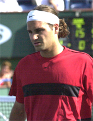
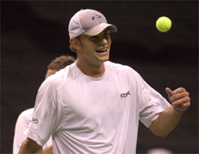

Previous: What Is Locker Room Power? | 🏠 Mental Game Home | Next: When Momentum is Neutral
When Momentum is Against You
Comprehensive unified tennis knowledge base — Fundamentals, Stroke Analysis, Reference Library, and more
When Momentum is Against You
By Alistair Higham
How do you react when everything is narrowly failing?
We've looked at the concept of momentum and what it means when momentum is with you, totally with you and when it's neutral. We've also looked at the worst case scenario, when momentum is totally against you. Now let's look at the last case, when momentum in a match is against you, although not totally. (For a look at the other articles in this series, Click Here.)
In this case, things may not appear hopeless, but the situation can be frustrating nonetheless. Your opponent may seem to be playing with increased energy and confidence and key points seem to go against you. Things that normally work, or maybe were working earlier on in the match, now just keep narrowly failing. If anything lucky happens, it happens to your opponent, rather than you. Small things are now major distractions. It can feel like you are swimming against the tide. However, you are not alone, all players experience these feelings.
At such moments it is easy to feel that things are slipping away and to become frustrated. Your body language may begin to tell the story of your feelings and may give even more encouragement to your opponent. How best do you deal with this situation? Without doubt, you could be on a slippery slope if you're not careful.
Fighting spirit is the starting point for reversing momentum.
Show Fighting Spirit
It is when things are against you that you need to show fighting spirit. Fighting spirit is the place to start to reverse the momentum flow and without it that will be impossible. Who or what caused the problems doesn't matter. It might be you, your opponent or the umpire. It's not a matter of why or how. The simple fact is that you have problems--and you need to have the right spirit to solve them.
Sometimes, fighting spirit is simply a question of being very determined, like a dog that refuses to let go of a stick. Sometimes, you need to see things differently - to see the positive side. Problems are, of course, really challenges. The trick is to learn to see things as a challenge. As Albert Einstein once said, "In the middle of difficulty, lies opportunity."
In an international match against the Czech Republic, I was sitting on the court watching the British number one junior, Anne. Every little thing that could go wrong for her was going wrong. Line calls went against her, net cords went against her, and on top of everything else, she had match points in the second set but could not convert. She was now a break down in the third set.

When a series of things go wrong it tests the character of even the best players.
So many things had gone wrong that it occurred to me that if I sat down and tried to design a tougher test of tennis character, I probably couldn't. At the next changeover I told her this, so if she wanted a reputation of being mentally tough then she had to pass this test.
It's vital to take your time between points when you are trying to turn momentum.
This view of things helped her see the situation as a challenge. Her on court energy became more positive. She began to show great fighting spirit. And then she was suddenly able to raise the level of her game. Not only did the momentum swing her way, but she was also able to keep it. The difference was when she changed her viewpoint and decided to see everything that went wrong as an opportunity to prove herself. Eventually she came through to win the match.
Don't Rush
When momentum is against you, it takes time to turn it around, so the longer you are on court the better. It is vital you take your time between points and don't allow yourself to be rushed.
This is sometimes not so easy to do. The natural reaction to having things go against you, is to want to make them right quickly. However, rushing when you have things go against you and are in turmoil will lead to more errors. The same shots you make when things are going your way, are the ones you always miss when things go against you. Resist the temptation then to hit your way out of the match. If you try this, you'll succeed - by hitting your way directly to a loss.
Keep your body language positive no matter how you may actually feel at a given moment in a given match.
Check Your Body Language
In wars, planes fly over the enemy dropping leaflets telling them bad news, for example that their supplies are running out, that their fellow soldiers have surrendered, that they should give up now before they are killed. Tennis is not war, but certainly you should not let your opponent know when you're not feeling as good as you would like. Don't drop your own leaflets or broadcast how you feel.
Switch on the Radar
Instead, switch on the radar. You need to be on the lookout for potential turning points. Even though the natural reaction may be to think that the fates are against you, you need to keep that radar firmly switched on.
A player I coach was once losing an international junior match. She was down 0-4, and the momentum was against her, but not as much as the score would imply. The match was actually very close, with every point and game tightly contested. I felt my player was losing only because her opponent was hitting a few unlikely winners. Unfortunately, my player was reading the score rather than the match and was feeling quite demoralized.
Perhaps because of this negative state of mind, she failed to seize two opportunities to turn the momentum her way. First, she hit a lucky net cord winner when she was down game point, then a brilliant passing shot from an almost impossible position.
She didn't seem to understand the significance, but nonetheless she had gotten back to 2-4. Then another golden opportunity presented itself. The match was being played on clay, and out of the blue a court maintenance man appeared to water the court according to his regular schedule.
It took a few minutes to sort out. My player could have used this distraction to her advantage. She should have realized that the delay would cause her opponent to become anxious since a match she was winning had been interrupted. But my player failed to spot this. Instead, she was the one who irritated and upset by the disruption. She therefore lost the opportunity to generate a momentum swing in her favour.
Many turning points occur in the mind of the opponent.
When you opponent is hitting unlikely shots to stay ahead, you should welcome outside distractions. The more the better! Your opponent is the one who has the most to loss from the interruption and you should recognize this as an opportunity for a shift in the emotional flow of the match.
Keep an Eye on Your Opponent
Watch the body language of your opponent and remember to keep doing it. If you were a boxer, this would be easy, because you are only a few feet away; in tennis you have to look closely and regularly if you want to pick up any signals.
Many turning points will occur in the mind of your opponent. Who knows, they may be carrying an injury, may be worried that they will lose a lead because they regularly do or may not be happy with the tension of a new racket.
You may not know what causes turning points, but you may be able to sense them if you keep an eye on how your opponent is feeling. The key is to watch them regularly and not just after really obvious potential turning points.
Let the turning points give you an energy boost.
Controlling Turning Points
When a potential turning point happens in your favour, you should allow it to give you a boost and show this in your body language. Your opponent might not have recognised it as a potential turning point and extra energy from you might introduce a doubt into their mind.
You will often see an experienced player visibly pick up in their energy when this happens. They will be livelier in their routine before the point starts, they may call out the score with more confidence in their voice and may shout "Come on" to themselves.
Players who have had momentum turn suddenly against them before, may start to worry when they see your reaction. Again, don't forget that the bigger the swing in mental energy at times like this, the bigger the swing in momentum.
Two things to help you control potential turning points are: learning to spot them quicker by having a positive attitude and maintaining a lead by using your imagination.

General attitude can help you in recognizing and exploiting turning points.
Spot Potential Turning Points
Having your potential turning points radar switched on is important but it is your speed of thought in recognising them and renewing your efforts that is key. Your general attitude can help this process considerably. If you always see the bright side of a situation, it can make a big difference. Here are two examples of how such an attitude can help renew efforts quickly and gain momentum.
One day, my mother, who is a low-level club player, was playing a singles match in a ratings tournament in Cumbria. She had just lost the first set 7-6. I passed the back of the court and asked her how she was getting on. Her reply was revealing. "Oh really well," she said. I wished her luck and left the match, wondering if her comment was meant to be sarcastic.
She went on to win the match and later I asked what she had meant by her comment. She replied, "Well I was really pleased to get 6-7. At my level, I lose so many matches heavily that I was quite encouraged to have lost the first set so closely. I was thinking to myself that if I could just change one or two things I had a good chance of levelling the match."
Such an attitude is a very positive one, but it is rare, because the emotion involved in going one set down when you might have been one set up can cloud your view. Indeed, the score-line 7-6, 6-0 is often seen because a close gap in mental energy can become a large gap if both players change, ie if one player is boosted by winning a close first set and the other is deflated.
In a national match between two players, Alan and Jim, the first set went fairly comfortably to Alan, who was the higher-ranked player and expected to win. The second set was very closely contested, and Jim just won it in a long-drawn-out tie-break during which time he played well above himself. Jim sat down at the end of the second set - he was visibly relieved and excited. He relaxed, thinking the climax would come at the end of the third set, like it had done in the second, a bit like a story coming together at the end.
Raising your intensity can help you win key points.
However, there was to be no climax. At the beginning of the third set Alan changed his strategy, increasing his intensity and energy to win key points in the flow of the first three games. Before his opponent could raise his intensity levels to an equivalent degree, he was 0-3 and the match had effectively slipped from his grasp. Alan had been able to renew his efforts after a disappointing second set because he stayed positive and was much better tuned in to the opportunities presented by the beginning of a new set.
Having a positive attitude allows you to see possibilities in situations that a negative attitude prevents you from seeing. It allows the outlook to be bright rather than dull. Former Wimbledon champion Jimmy Connors once said he never lost a tennis match, he just occasionally ran out of time before he found out how to win!
Using Your Imagination
Sometimes, momentum can be going against you when you are in the lead. Again your attitude to events can make a big difference in how things end up.
Whatever the situation, it's rarely as bad as it seems when you take the emotion out of it. Imagine you are 6-4, 5-1 and your opponent comes back to 5-4. With only two minutes at the changeover you may not get your mental approach right to renew your energy.
But imagine you were able to travel back in time to before the match began and someone offered you 6-4, 5-4 as a scoreline to start the match with, instead of 0-0 and gave you two hours to get ready. You would surely arrive ready to play and psyched up. Well we haven't discovered time travel yet, but you can get the same attitude simply by learning to renew your efforts quicker.
How to Create Turning Points
As well as keeping the radar on to spot potential turning points, you should try to create turning points. There are many ways you can help create turning points in your favour through your own actions. Some of these are: Changing tactics. Not changing tactics. Winning the best rallies. Spotting patterns of play.
How many balls can you opponent really rally?
Changing Tactics
You could consider changing tactics. Here is one personal example how changing tactics can turn a match around.
In my younger days, I played for a German Club in the Bavarian leagues. Having been flown over by the club and being paid by the club for playing as their number one player, I was keen to make a good impression.
On the first day I asked about my opponent's style and was told in a thick German accent: "He can rally for one hundred shots, is very fit and never misses a passing shot.". Being more used to grass than clay, this was not what I wanted to hear. I decided to go for quick winners as rallying was obviously pointless. I lost 6-0, 6-2 in less than an hour.
Fortunately, I won the doubles to win the tie that day, but was not looking forward to the singles match next day. It came all too soon and in the morning I enquired about my next opponent. The reply came again, but this time seemed to be delivered in an even heavier tone: "He can rally for one hundred shots, is very fit, never misses a passing shot and is ranked four places above the player you lost to yesterday." "Hhhmmm" I thought.
The match started, and since I had no real plan, things started to go against me from the start. I felt downhearted. Then at one changeover I decided, more out of interest than anything else, to see if he could rally for a hundred shots. I began to count the shots in each rally and literally did nothing else for the rest of the match. The longest rally we had was twenty-six shots and I won 6-4, 6-1. Nobody was more surprised than me!
Not Changing Tactics
Sometimes, you may not need to change tactics, but simply do what you are doing better, or allow it time to have its effect.
You may be dominating the points every time you get your first serve in but be missing too many first serves. You may also have worked very good openings and come to the net only to miss a couple of crucial smashes, which has tilted things against you. The answer in this case would be to continue but to get more first serves in and not to miss the smashes after working for the opening.
Sometimes you just need to keep doing what you do and let it have it's effect.
If you are playing good consistent tennis, but have lost a close first set, you may not need to change either. Consistent baseline play that maintains a level sometimes takes time to have its effect on the opponent. The effect is like that of an arm wrestle. If you keep the pressure on for long enough then the opponent will wilt. Some sooner, some later, depending on how mentally tough they are.
Winning the Best Rallies
There are times in a match when both players play their best tennis at the same time, in quality rallies. This may happen in only one or two rallies or it may happen in several rallies, sometimes close together. If you can win these rallies, then it can create a turning point in your favour. This is because of the effect on a player mentally of losing the point despite playing their best tennis. Seeing your best shots returned with interest is depressing! If this happens a few times, a player may just accept that you are the better player and begin to lose hope of winning. How many times? Well, again, it depends on how mentally tough they are.
Spotting Patterns of Play
Knowing the likely patterns of your opponent can help create a turning point in your favour. You can scout your opponent to note their favourite patterns or you can simply observe carefully and gather information as the match goes on.
For example, a player may always smash to the backhand, or always pass crosscourt. If you make a mental note of these patterns, it allows you to make a best guess at a crucial time later in the match. If you steal the type of point that your opponent had been winning on a big point, this could create a turning point in your favour.
Fair Play
But one last point. Never attempt to create turning points by bending the rules. The enjoyment of winning is very closely linked to the enjoyment of overcoming the obstacles during the journey towards winning. Don't let that journey be tainted by use of gamesmanship. Keep your tennis on the tennis battlefield.

Alistair Higham is the National Manager of Coach Development for the LTA, the governing body for tennis in Great Britain. He is the author of Momentum: The Hidden Force in Tennis. Alistair is a former professional player who continues to compete successfully at the highest levels of English regional tennis. He has developed and coached dozens of top junior players, and traveled extensively on the international junior circuit, where he has had the unique opportunity to make a close study of the hidden force that dictates so much in the outcome of competitive tennis matches.

Momentum: The Hidden Force in Tennis Alistair Higham
Read this important new perspective on momentum and the development of the mental game, by top English coach Alistair Higham. Based on his observation of literally thousands of competitive matches as well as his own professional career, this book will give you the perspective and the tools to create momentum in your own matches and deal with the critical turning points that are the difference between winning and losing.
Click Here to Order!
Source: tennisplayer.net archive — When Momentum is Against You.docx (John Yandell teaching library, 2002-2022). Extracted and rendered as HTML for Tennis Future Lab.